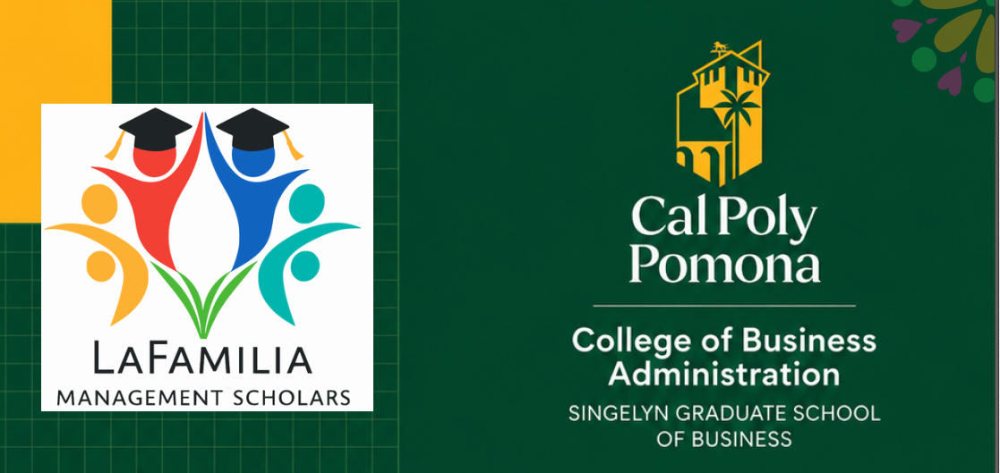
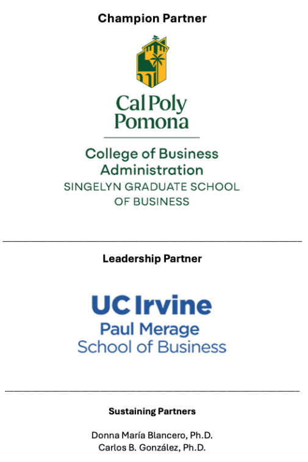

The Inaugural LaFamilia Management Scholars Conference brings together Latinx faculty, doctoral students, administrators, and allies from across the country to confront the persistent invisibility of Latine voices in business schools.
Through research presentations, honest dialogue with deans, career pathway stories, and collaborative sessions, we will identify actionable strategies to increase representation, support success, and transform institutional cultures.
"Latinos and Latinas in Business Schools: Challenging Invisibility"
On behalf of all of us at LaFamilia and Cal Poly Pomona's College of Business Administration, thank you for being part of this important summit. Throughout these two days, we will build meaningful connections, exchange ideas, and strengthen our shared commitment to advancing Latine representation and success in business schools.
LaFamilia Management Scholars is more than an academic organization—we are a community committed to supporting one another, creating opportunities, and advancing possibility through collective action. Together, we are building a stronger future for Latine faculty, students, and allies through culturally relevant mentorship, collaboration, and professional development.
Please visit our website to learn more about LaFamilia and join our network to receive updates on future events and opportunities. Continue this journey with us—in community (comunidad), family (familia), and solidarity (solidaridad).
Dr. Sylvia Hurtado (UCLA / AERA) will discuss her pioneering research on Latine student success in higher education and its direct implications for business schools and leadership pipelines.
Open dialogue and audience questions following the keynote.
Connect with fellow scholars, administrators, and leaders in a relaxed setting. Light refreshments will be served.
Start the day with coffee, pastries, and informal networking.
Explores the diversity, origins, and identities of Latine individuals and implications for organizations and business schools. Includes demographic, educational, and workforce data on representation and inclusion.
Latine professionals reflect on career journeys — strengths, challenges, and strategies that fueled their success.
Networking lunch provided for all attendees.
Strategies, initiatives, and lessons learned from CSU and UC institutions supporting Latine student success — and how they can transfer to other colleges and universities.
Business school deans discuss institutional practices, organizational realities, and leadership strategies that foster truly inclusive environments — with a focus on Latine students, faculty, and future academic leaders.
An open, facilitated discussion to gather input from attendees and chart the future of LaFamilia’s work, programming, and impact in business schools nationwide.
The dedicated team bringing this inaugural event to life
Dr. Sylvia Hurtado is a Distinguished Professor of Education in the School of Education and Information Studies at UCLA and directed the Higher Education Research Institute for over a decade. She has written extensively on diverse students’ college experiences, the campus racial climate, STEM pathways for underrepresented groups, and equity and diversity in higher education.
She is co-editor of books that won International Latino Book Awards, including Hispanic Serving Institutions: Advancing Research and Transformative Practice and The Magic Key: The Educational Journey of Mexican Americans from K-12 to College and Beyond.
Dr. Hurtado was elected to the National Academy of Education in 2019 and will assume the presidency of AERA in 2027. She has received numerous awards for her contributions to social justice in education and research on Latinx student success.
Leaders shaping the future of Latine visibility in business education
+ Many more distinguished scholars, administrators, and community leaders contributing to this historic gathering.
This inaugural conference was made possible through the generosity and partnership of the following organizations and individuals.

On behalf of the LaFamilia Management Scholars Board and the Conference Organizing Committee, we express our deepest gratitude to our keynote speaker, Dr. Sylvia Hurtado, as well as our panelists, presenters, moderators, volunteers, sponsors, and everyone whose time, expertise, and dedication contributed to the success of this inaugural conference.
We also extend our sincere thanks to Dean Sandeep Krishnamurthy for his support and for helping make this inaugural conference at Cal Poly Pomona possible.
Join us for two powerful days of dialogue, community building, and action toward greater visibility and inclusion in business education.
For questions, please contact the LaFamilia leadership team.
lafamiliamgmtscholars.com